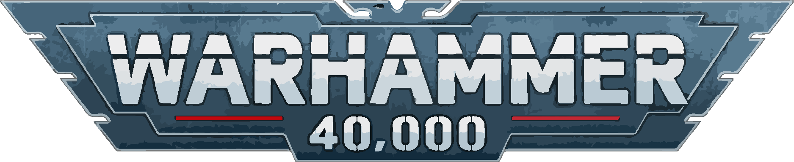

Jag spelar figurspel!
Främst så målar jag figurer till och spelar Warhammer 40.000. Du kan se några av mina handmålade figurer på bilden till vänster.

För att kortfattat sammanfatta warhammer 40.000 så är det ett figurspel som utspelar sig i en mörk framtid (år 40.000). Spelet och de skönliterära böckerna är en satir, hat mot utomjordingar och allt som inte ser ut som just du.
Själv spelar jag som Dödsgarden. Förrädare mot gudskejsaren :D
Främst så målar jag figurer till och spelar Warhammer 40.000. Du kan se några av mina handmålade figurer på bilden till vänster.
För att kortfattat sammanfatta warhammer 40.000 så är det ett figurspel som utspelar sig i en mörk framtid (år 40.000). Spelet och de skönliterära böckerna är en satir, hat mot utomjordingar och allt som inte ser ut som just du.
Själv spelar jag som Dödsgarden. Förrädare mot gudskejsaren :D